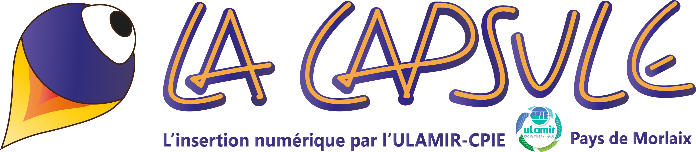
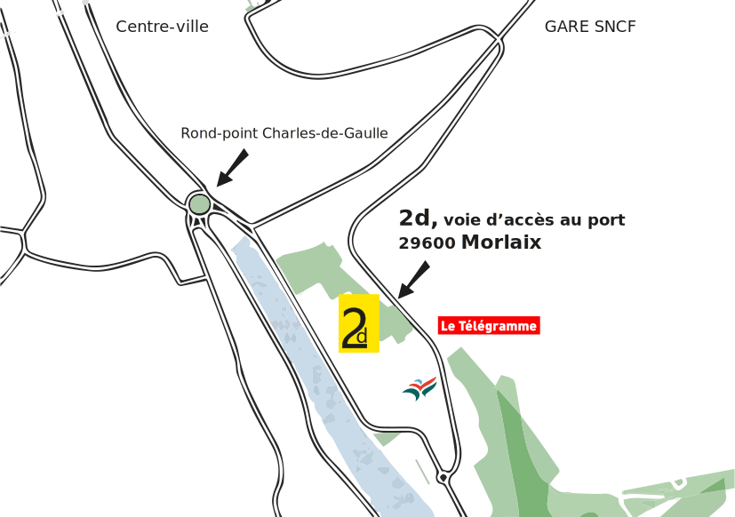

BIENVENUE
Ce site web a été intégralement écrit par nos salariés
FROM SCRATCH
Son code source est disponible sur
GITHUB
La Capsule
Chantier d'insertion numérique
ULAMIR-CPIE
Pays de Morlaix


5 jeunes, de 18 à 30 ans, ont intégré, début octobre, le chantier d'insertion numérique porté par le centre social Ulamir-CPIE Pays de Morlaix et l'association Goupil qui lutte contre la fracture numérique. Orientés par la Mission locale et
Pôle emploi, ils reconditionnent actuellement des ordinateurs, vérifient les stocks, font le lien avec les entreprises... Recrutés sur "leur motivation", indique Michel Clech, encadrant, ce chantier leur sert de tremplin, de lieu de remobilisation,
vers les métiers du numérique ou d'autres secteurs.
Lorsque le contexte sanitaire le permettra, ces jeunes pourront aussi animer des séances de découverte du numérique dans les maisons de retraite, les PME, auprès des autres ados...
Ce chantier d'insertion est prévu pour 3 ans.